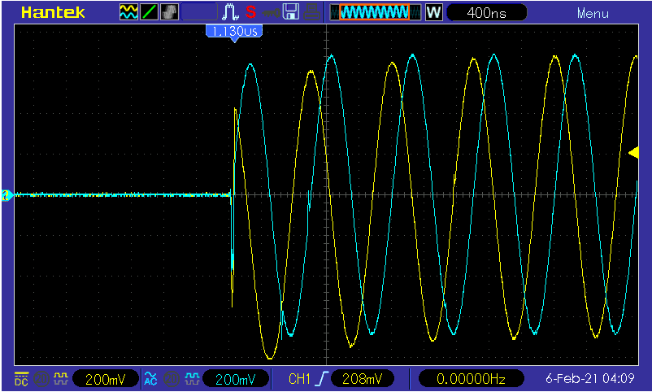
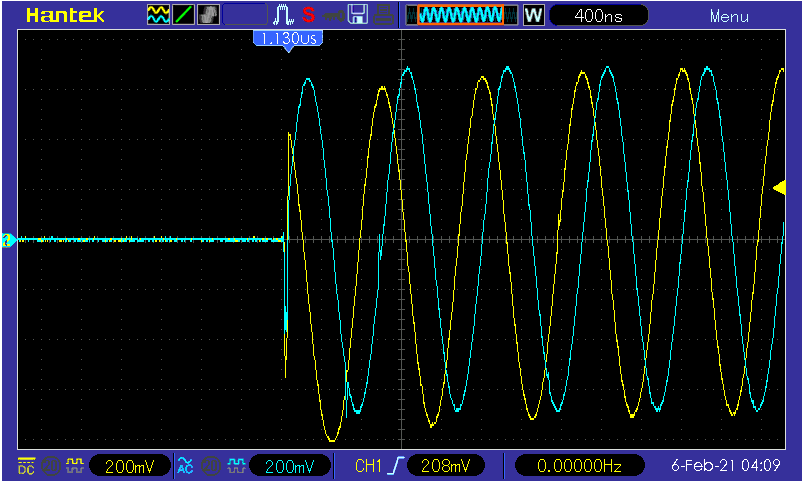

500 Msps DDS-AWG for Radar Simulation
This project grew out of a need to test a design for an orbital ground penetrating
radar sounder for detecting lava tubes that I designed for the Husky Satellite Lab at
the University of Washington. We are not licensed to transmit on the frequencies used
by the radar sounder, and there are no terrestrial targets with predicted radar
signatures similar to those of lava tubes on the moon. I proposed that we build a
system to synthesize radar returns generated by Chris Gerekos' Coherent Multilayer
simulator, and this is what I built after that proposal was funded.
 The DDS uses an Altera Max V CPLD to load an SRAM with data extracted from Gerekos'
simulator. When the system receives a trigger signal, the CPLD reads out the data in
the SRAM at 100Msps into a TI DAC5687 which does all the hard work of numerically
upconverting and synthesizing the signal. The result is a complex 500Msps output with
100MHz of bandwidth which can be used as a test input for our radar setup. All of the IP
that I created for this project is open source, and it can be found at
the UW Cubesat Github Repository.

The DDS uses an Altera Max V CPLD to load an SRAM with data extracted from Gerekos'
simulator. When the system receives a trigger signal, the CPLD reads out the data in
the SRAM at 100Msps into a TI DAC5687 which does all the hard work of numerically
upconverting and synthesizing the signal. The result is a complex 500Msps output with
100MHz of bandwidth which can be used as a test input for our radar setup. All of the IP
that I created for this project is open source, and it can be found at
the UW Cubesat Github Repository.

 An example output from the DDS, synthesizing first a square wave and then a sine wave
at baseband.
An example output from the DDS, synthesizing first a square wave and then a sine wave
at baseband.